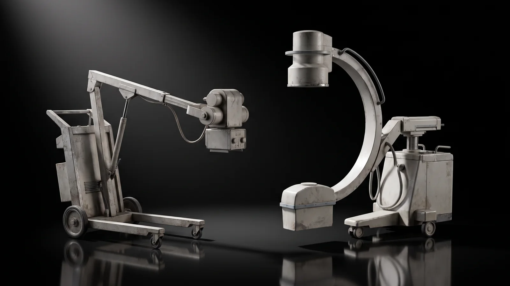
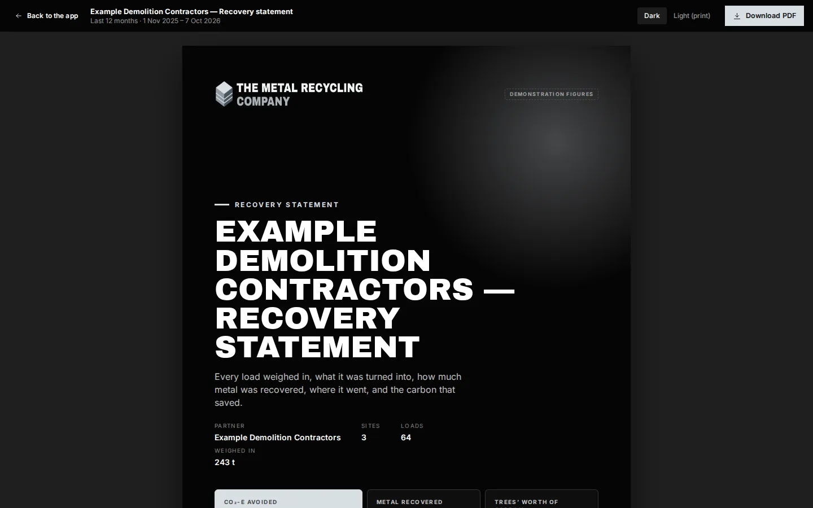

Hospitals & health
Ward refit? We'll take the old beds.
Beds, trolleys, wheelchairs, stainless, steel shelving and retired medical equipment, collected from hospitals, aged care and health services, recycled, and reported for your sustainability team. One service fee, quoted before we come.
What we take from health services
Heavy, awkward and mostly steel
Health services replace equipment constantly: a ward refit, a new theatre, an aged-care upgrade. Most of what comes out is metal, and none of it should go to landfill.
- Hospital & aged-care beds
- Trolleys & carts
- Linen cages
- Wheelchairs & commodes
- IV poles
- Patient lifters
- Stainless benches & sinks
- Sterilisers & autoclaves
- Imaging equipment frames
- Theatre lights & pendants
- Kitchen stainless
- Plant, pumps & motors
- Switchboards & cable
- Computers & servers
- Lockers & shelving
We do the lifting
From wards, basements and plant rooms to the truck. We can dismantle frames and work after hours around patients and visitors, quoted when we confirm the job.
Inductions and screening
Tell us your induction, infection-control and staff-screening requirements when you book. We plan the job around them.
One number for the purchase order
The service fee is quoted before we come, so procurement has a fixed amount to approve.
Retired medical equipment
Cleared by your team. Collected by ours.
Medical equipment can carry contamination, data, oil, lead or a radiation source. We collect it once your biomedical engineering team, or the equipment supplier, has decommissioned and cleared it. These are the checks we ask for.
All medical and lab equipment
- Decontaminated and signed off, with a decontamination certificate or tag.
- Data removed or wiped by your team, with our data declaration signed.
- Fluids, gases and batteries drained, recovered or removed.
- Asset-register disposal approved on your side.

X-ray and imaging units
- Rendered inoperable and radiation warning signs removed or covered.
- Disposal notified to the Department of Health, as a condition of your management licence.
- Tube and transformer oil tested for PCBs. Some older units contain them.
- Lead-lined housings and beryllium-window tubes assessed as the department's guidance requires before the metal is recycled.
- Clearance form signed by the licence holder before we collect.

For your sustainability report
Every bed, every trolley, on the record
Every collection crosses our weighbridge. You get a statement showing what was collected, what it weighed, what it became and the carbon avoided by not making that metal new, by site, by period, or for a single refit.
- Statements for each collection and for any period
- All your sites in one place, in Recycled Connect
- The method and sources for every saving, in plain sight
Health services we're built for
From one ward to a whole network
Public hospitals
Ward and theatre refits, plant upgrades, equipment replacement programs.
Private hospitals
Day surgeries and private hospitals replacing beds, trolleys and theatre equipment.
Aged care
Bed and lifter replacements, room refurbishments, kitchen and laundry upgrades.
Clinics & labs
Radiology, dental, pathology and research labs clearing equipment and benches.
Planning a refit or a clear-out?
Book a collection, or talk to us about a standing arrangement across your sites.